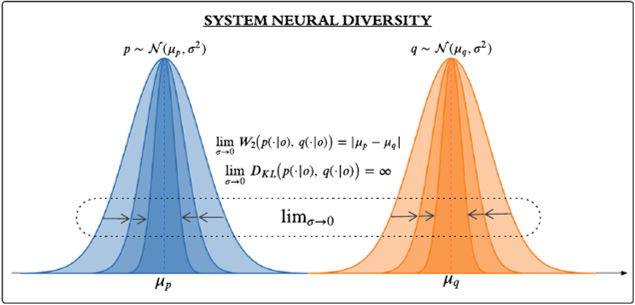
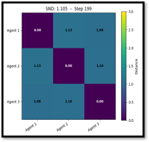
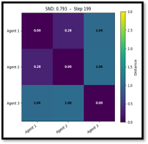
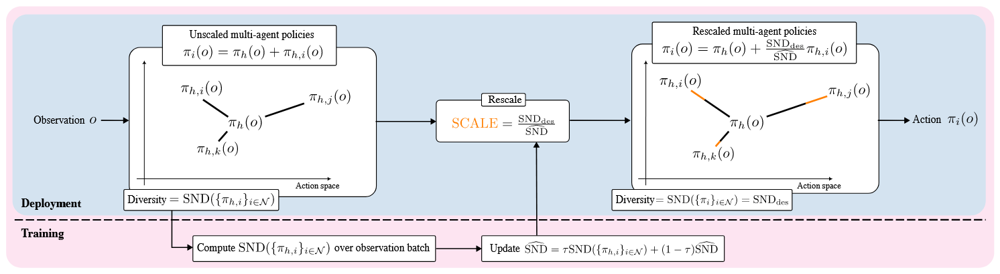
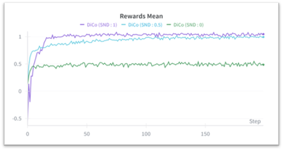
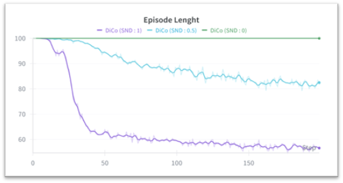
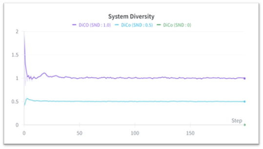

Method: Diversity Control
How is behavioral diversity measured and controlled?
01
How do we measure behavioral diversity?
Each agent's policy defines a probability distribution over actions given an observation, so the difference between two agents can be measured as a distance between their action distributions. System Neural Diversity (SND) summarizes team diversity as the average pairwise distance between agent policies across observations. We use the Wasserstein-2 distance, which remains well defined when two distributions do not overlap, whereas the Kullback-Leibler divergence grows without bound.

02
What does SND reveal about team structure?
Beyond a single value, the matrix of pairwise distances shows how diversity is distributed across the team. In Navigation with three agents and three goals, all pairwise distances are uniformly high, indicating three distinct policies. With two goals, two agents share a goal and converge to similar behavior, with a pairwise distance of 0.28, while the third agent specializes. This reveals an emergent sub-team structure.
Three goals (SND 1.105)
Two goals (SND 0.793)


03
How does DiCo control diversity?
Diversity Control (DiCo) decomposes each agent's policy into a shared homogeneous component and an agent-specific heterogeneous component. During training, DiCo estimates the SND of the heterogeneous components and rescales them by the ratio of the desired SND to the estimated SND. This constrains the team's behavioral diversity to the desired target while reinforcement learning updates the policies.

04
Why does the choice of target matter?
DiCo enforces a diversity target but does not choose it. In Navigation with three agents and three goals, a target of SND 1 achieves the highest reward and the shortest episodes, as agents cover all goals. A target of 0 forces identical behavior and plateaus at approximately half the reward, while 0.5 learns more slowly. The best target differs across tasks, which motivates selecting it automatically with ESC.
SND 0
SND 0.5
SND 1


